スプライトの編集
初級 デザイナー
スプライト シートをインポートした後は、専用のスプライト エディターを使用して、スプライト シート内のスプライトを選択できます。
また、他のアセットと同じように、［Property grid］でスプライトのプロパティを編集できます。
スプライト エディターを開く
スプライト エディターを開くには、［Asset view］でスプライト シート アセットをダブルクリックします。
スプライト シートがスプライト エディターで開きます。
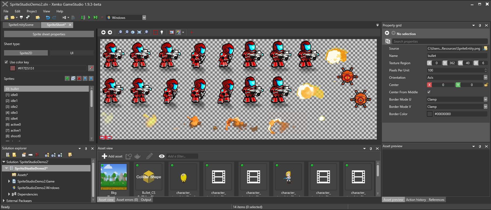
スプライト シートの種類を設定する
スプライト シートに含まれるのがゲームプレイ スプライト (Sprite2D) か UI スプライト (UI) かを設定できます。この設定は実行時のスプライトのレンダリング方法には影響を与えませんが、後の「スプライトのプロパティ」で説明するように、設定できるプロパティが少し異なります。スプライト シートの種類はいつでも変更できます。
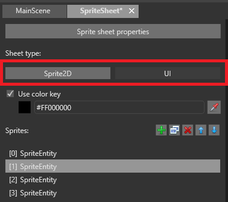
スプライトを追加する
［Add empty sprite］ボタンをクリックします。
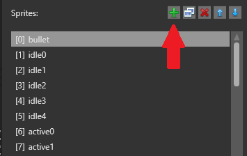
空のスプライトがリストに追加されます。
右側の［Property grid］の［Source］フィールドで、スプライトを格納するスプライト シートを指定します。
Tip
リストの他のスプライトと同じスプライト シートから新しいスプライトを作成する場合は、通常、既存のスプライトを複製すると時間がかかりません。スプライトを複製するには、スプライトを選択し、［Duplicate selected sprites］をクリックするか、Ctrl + D キーを押します。
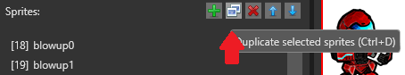
スプライト リスト
スプライト エディターの左側には、プロジェクト内のスプライトが一覧表示されます。各スプライトには、インデックス番号が付いています (1 番目のインデックスは ［0］、2 番目のインデックスは ［1］、以下同様)。これらのインデックスを、スクリプトで使用できます (「スプライトを使用する」を参照)。
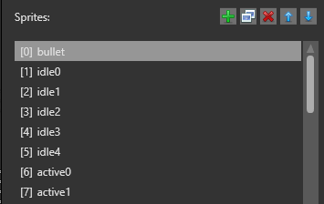
スプライトの順序 (したがってインデックス番号) を変更するには、 (［Move selected sprite up/down］) ボタンを使用します。たとえば、［1］ Sprite を下に移動すると、［2］ Sprite になります。
リストに表示されるスプライトの名前を変更するには、スプライトをダブルクリックして新しい名前を入力します。
テクスチャ領域を設定する
スプライト シートで長方形のテクスチャ領域を定義することにより、スプライトを作成します。
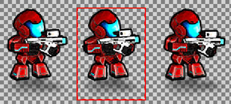
そのための方法は、Magic Wand ツールを使用する、領域のエッジを手動で設定する、スプライトのプロパティでピクセル座標を指定する、の 3 種類です。
Magic Wand を使用する
Magic Wand は、スプライトを囲むテクスチャ領域を自動的に選択します。通常、これはスプライトを選択する最も迅速な方法です。
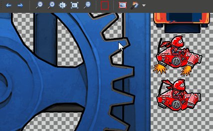
Magic Wand を選択または選択解除するには、スプライト エディターのツールバーのアイコンをクリックするか、M キーを押します。
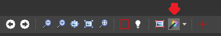
Magic Wand がテクスチャ領域を識別する方法を選択するには、ツールバーのドロップダウン リストを使用します。
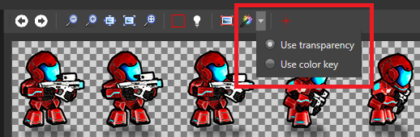
［Use transparency］: Magic Wand は、非透明領域のエッジを、テクスチャ領域のエッジとして扱います。たとえば、スプライトが透明なスペースで囲まれている場合、透明なスペースのエッジにテクスチャ領域が設定されます。
［Use color key］: Magic Wand は、スプライト エディターの［Color key］で設定されている色を使用してテクスチャ領域を識別します。たとえば、スプライトが完全な黒 (#FF000000) で囲まれている場合、完全な黒をカラー キーとして設定すると、完全な黒のスペースのエッジにテクスチャ領域が設定されます。
テクスチャ領域を手動で設定する
テクスチャ領域のエッジをドラッグすることにより、手動で領域を変更できます。
####［Property grid］でテクスチャ領域を設定する
［Property grid］の［Texture Region］で、テクスチャ領域のピクセル座標を定義できます。［X］は左のエッジ、［Y］は上のエッジ、［Z］は右のエッジ、［W］は下のエッジです。
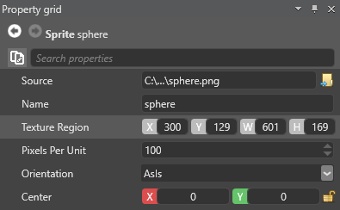
スプライト シート全体をスプライトに使用する
スプライト シート全体の画像をスプライトに使用する場合は、ツールバーの［Use whole image for this sprite］をクリックして簡単に設定できます。これは、スプライト シートのスプライトが 1 つだけの場合に便利です。
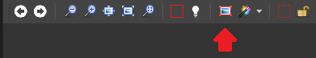
透明性を設定する
既定では、スプライト シートの透明な領域は実行時に透明として扱われます。代わりに、キー カラーを透明として設定できます。そのためには、［Use color key］を選択して色を定義します。たとえば、完全な黒 (#FF000000) を設定すると、実行時には完全な黒の領域が透明になります。
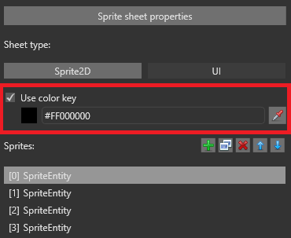
カラー ピッカー ツールを使用してスプライト シートから色を選択することもできます。
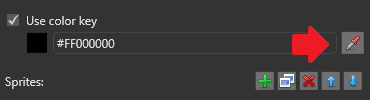
スプライトのプロパティ
個別のスプライトのプロパティは［Property grid］で設定できます。
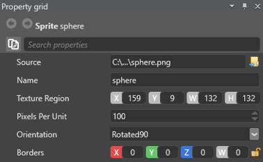
| プロパティ | 説明 |
|---|---|
| Source | スプライト シートのパスです。 |
| Name | このスプライトの名前です。スプライト エディターのスプライト リストでスプライトをダブルクリックして、名前を編集することもできます。 |
| Texture Region | このスプライトに使用されるスプライト シートの領域です。 |
| Pixels Per Unit | シーンでの単位を表すピクセルの数です。この値が大きいほど、シーンにレンダリングされるスプライトは小さくなります。 |
| Orientation | ［Rotated90］を選択すると、実行時にスプライトは 90 度回転されます。 |
| Center | スプライトの中心の位置です (ピクセル単位)。既定の中心は 0, 0 です。NOTE: このプロパティは、スプライト エディターでスプライト シートの種類が［Sprite2D］に設定されている場合にのみ使用できます。 |
| Center From Middle | 選択すると、［Center］プロパティの値はスプライトの真ん中からのスプライトの中心のオフセットを表します。NOTE: このプロパティは、スプライト エディターでスプライト シートの種類が［Sprite2D］に設定されている場合にのみ使用できます。 |
| Borders | スプライトの境界 (拡大されたときに変形しない領域) のサイズです (ピクセル単位)。［X］は左の境界、［Y］は上、［Z］は右、［W］は下です。詳細については、「スプライトの境界を設定する」を参照してください。NOTE: このプロパティは、左側でスプライト シートが［UI］に設定されている場合にのみ使用できます。 |
スプライト シートのプロパティ
スプライト シート アセット全体のプロパティを設定することもできます。プロパティにアクセスするには:
*［Asset view］でスプライト シート アセットを選択し、［Property grid］でプロパティを設定します。
または、スプライト エディターで［Sprite sheet properties］をクリックします。
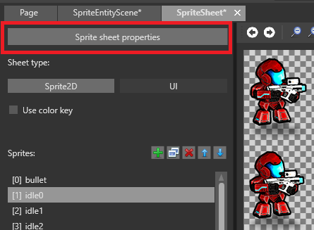
多くのプロパティは、テクスチャのプロパティと同じです。
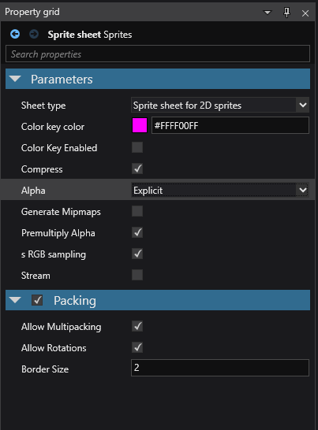
| プロパティ | 説明 |
|---|---|
| Sheet Type | このスプライト シートが、2D スプライトまたは UI 要素のどちらに使用されるか。［Sprite sheet for UI］を選択した場合は、スプライトでスプライトの境界を定義できます。 |
| Color Key Color | 実行時に透明として使用される色です。これは、［Color Key Enabled］が選択されている場合にのみ適用されます。 |
| Color Key Enabled | ［Color Key Color］プロパティで設定されている色を、実行時に透明として使用します。それ以外の場合は、スプライト シートの透明領域を代わりに使用します |
| Format | スプライト シートのすべてのスプライトを圧縮するテクスチャ形式です (［Compressed］、［32 bits］、［16 bits］、または [AsIs］)。 |
| ColorSpace | スプライト シート内のスプライトの色空間です (［Auto］、［Linear］、または [Gamma］)。 |
| Alpha | スプライト シート内のすべてのスプライトが変換されるテクスチャのアルファ形式です (［None］、［Mask］、［Explicit］、［Interpolated］、または [Auto］)。 |
| Generate Mipmaps | スプライト シートのすべてのスプライトに対してミップマップが生成されます。 |
| Premultiply Alpha | 画像のすべての色成分にアルファの色成分が事前に乗算されます。 |
| Allow Multipacking | スプライトが 1 つのアトラスに収まらない場合、複数のアトラス テクスチャを生成します。 |
| Allow Rotations | スプライト シート内でスプライトが回転されてスペースが最適化されます。実行時のスプライトの表示方法には影響ありません。 |
| Border Size | スプライトを囲む境界のサイズです (ピクセル単位)。これは、スプライト シートの副次的影響を防ぎます。 |